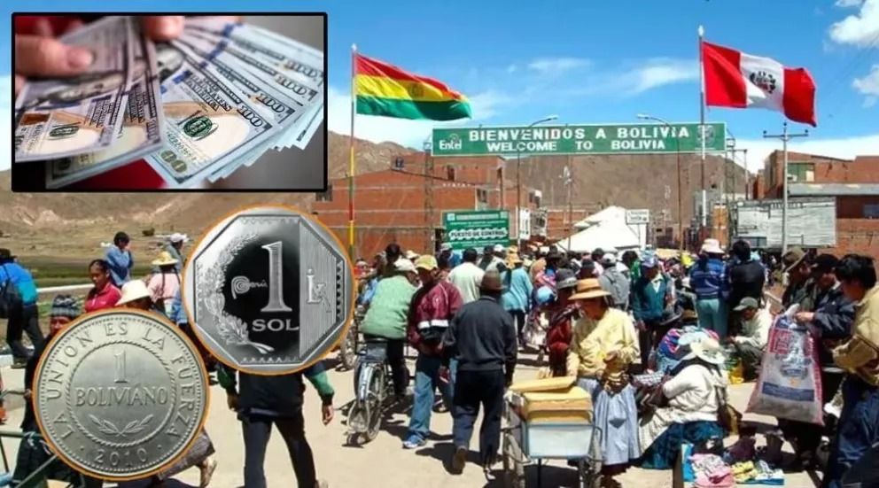
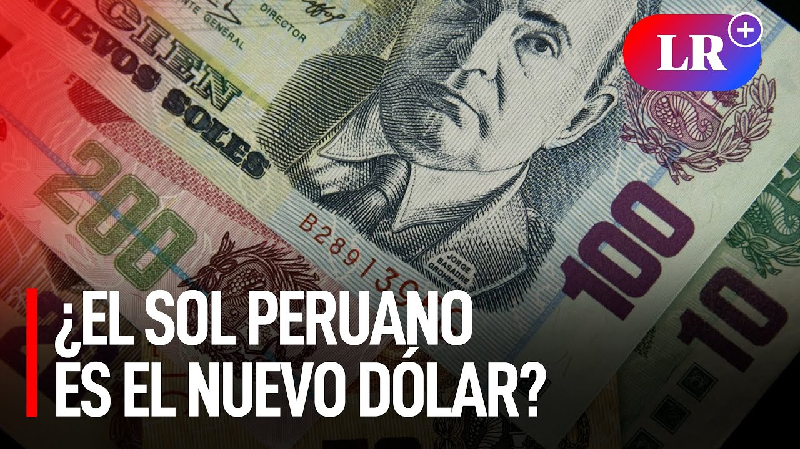

¡En la frontera! El Sol Peruano se convierte en el Nuevo Dólar para Bolivia
24/09/24
Los bolivianos ya no quieren usar su moneda. En este momento, el sol peruano está salvando a cientos de comerciantes bolivianos en la frontera. La situación en Bolivia empeora cada vez más, y los analistas advierten que esta crisis se está extendiendo por todo el país. Perú tiene la obligación de proteger sus fronteras.
La economía boliviana está tambaleando; el modelo económico que tanto defendían se está desmoronando. Pero, ¿por qué está ocurriendo esto? ¿Es cierto que el sol peruano está ganando terreno en Bolivia?
La economía boliviana es modesta y ocupa el puesto 95 a nivel mundial en términos de volumen de PIB, con un producto interno bruto de 44.01 mil millones de dólares en 2022. El país enfrenta grandes desafíos en cuanto a su deuda pública, que ascendió a 33.642 millones de euros, representando el 80.01% del PIB. Esta cifra indica una alta carga financiera para el país, con una deuda per cápita de 2.785 euros por habitante. Por si fuera poco, a lo largo de los últimos años, la economía del país depende en gran medida de la exportación de gas natural, lo que ha generado una vulnerabilidad ante la fluctuación de los precios internacionales y la disminución en la producción de este recurso. Y, además, exportar de este gas también es demasiado costoso debido a su falta de acceso directo hacia el mar.
Por otro lado, la economía peruana es una de las más fiables de la región. El país ha experimentado un crecimiento sostenido impulsado por sectores clave como la minería, especialmente en la extracción de cobre y oro, y el comercio exterior. La estabilidad macroeconómica y las reformas en el sector financiero han sido fundamentales para que el país se mantenga en el radar de los inversores internacionales. Además, su ubicación geoestratégica y su creciente conectividad portuaria, como el desarrollo de megaproyectos logísticos, le brindan una excelente ventaja competitiva en el comercio regional e internacional.
En los últimos meses, Bolivia ha enfrentado una grave crisis económica que ha afectado profundamente su comercio. La escasez de dólares y la caída del valor del peso boliviano han llevado a que los comerciantes en la frontera prefieran realizar transacciones usando el sol peruano.
“Se ha caído el peso boliviano, demasiado. Los bolivianos no quieren su plata, quieren más soles, porque su moneda está muy desvalorizada”, dijo una residente de Desaguadero.
En Desaguadero, ciudad fronteriza con Bolivia, el tipo de cambio actual es de 2,70 bolivianos por un sol, lo que convierte al sol en una moneda más confiable para las transacciones cotidianas. Por otro lado, a día de hoy, el dólar en Bolivia se cotiza en torno a los 6,85 bolivianos, lo que indica una apreciación frente a la moneda nacional.
¿Qué llevó a Bolivia a atravesar una grave crisis financiera?
En realidad, esta crisis no ha sido causada por un solo incidente, sino por una acumulación de factores a lo largo del tiempo. Uno de los principales problemas ha sido la fuerte dependencia del país en la exportación de gas natural y minerales, cuyos precios han caído considerablemente en los mercados internacionales. Además, las políticas de subsidios y el gran gasto público han provocado un alto déficit fiscal, lo que ha obligado al gobierno a utilizar sus reservas internacionales para cubrir los déficits. Todo esto ha agravado la escasez de dólares, creando un círculo vicioso en el que la falta de confianza en la economía boliviana ha aumentado la demanda de divisas extranjeras, intensificando la crisis.
Aunque pueda aparentar que en el país boliviano la inflación ha estado bajo control, ahora mismo ha empezado a afectar los precios de productos básicos, lo que le ha molesto por completo a la población.
Por todo esto, el sol peruano ha surgido como una opción más confiable en las regiones fronterizas, donde la proximidad y las relaciones comerciales con Perú facilitan su uso. El fenómeno de una dolarización parcial de la economía boliviana, junto con la adopción de monedas regionales como el sol, refleja el vago panorama económico que enfrenta la nación.
¿Por qué Bolivia no tiene dólares?
En Bolivia, las reservas han caído mucho en los últimos años. Estas reservas pasaron de $15.000 millones de dólares en 2014 a solo $1.800 millones en 2024, según el Banco Central de Bolivia. ¡poco más y llegan a 0!
Varios factores, como la disminución de los precios de las materias primas, que son el principal motor económico del país, y una balanza comercial desfavorable, han reducido la entrada de dólares, limitando la capacidad del gobierno de abastecer la economía con esta divisa.
El presidente de Bolivia, Luis Arce, se dirigió al país para explicar que esta crisis de divisas es consecuencia de una mala gestión en la nacionalización de los hidrocarburos, la dependencia de la importación de combustibles y los créditos bloqueados en la Asamblea Legislativa Plurinacional.
La prensa boliviana ha informado que cada vez es más difícil conseguir soles en su territorio. Nadie quiere aceptar pesos bolivianos como forma de pago, lo que agrava la crisis. Como resultado, los ciudadanos buscan desesperadamente dólares para mantener su comercio y satisfacer sus necesidades, pero la falta de divisas empeora aún más la situación.
Por si fuera poco, la falta de divisas ha llevado a que las casas de cambio en Perú limiten las transacciones con pesos bolivianos. En algunos lugares, incluso se han negado a aceptar bolivianos, lo que complica aún más la situación de los visitantes bolivianos que intentan realizar operaciones en Perú.“Acá donde estoy, 100 bolivianos no sirven de nada, no se pueden cambiar por ninguna otra moneda”, comentó uno de los afectados.


 Este sitio utiliza cookies para mejorar la experiencia del usuario.
Este sitio utiliza cookies para mejorar la experiencia del usuario.